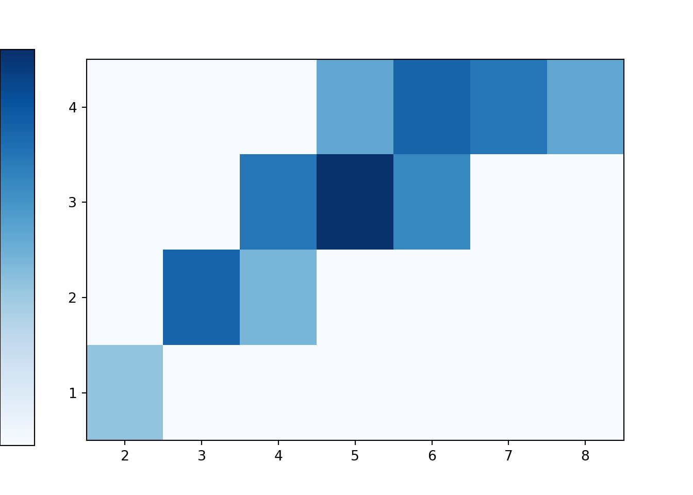
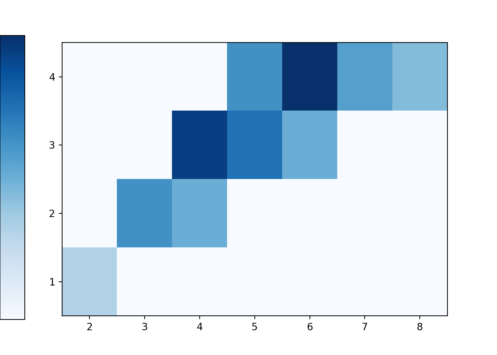
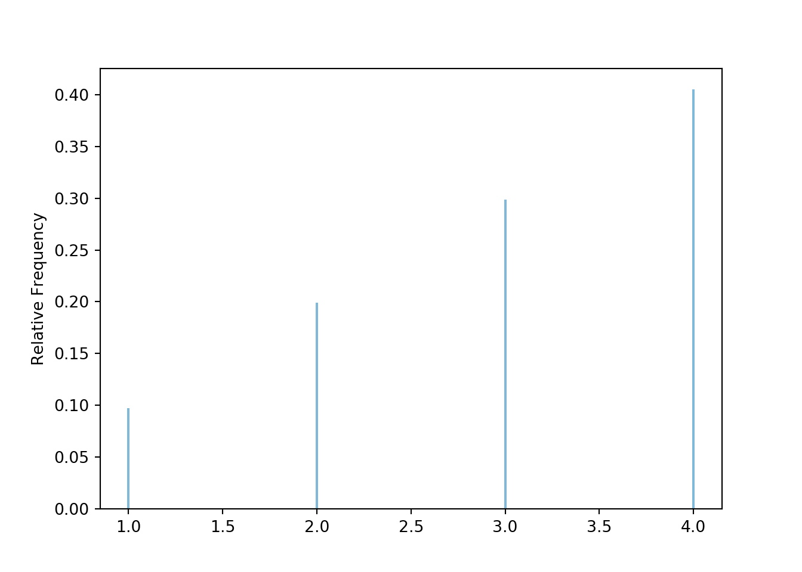
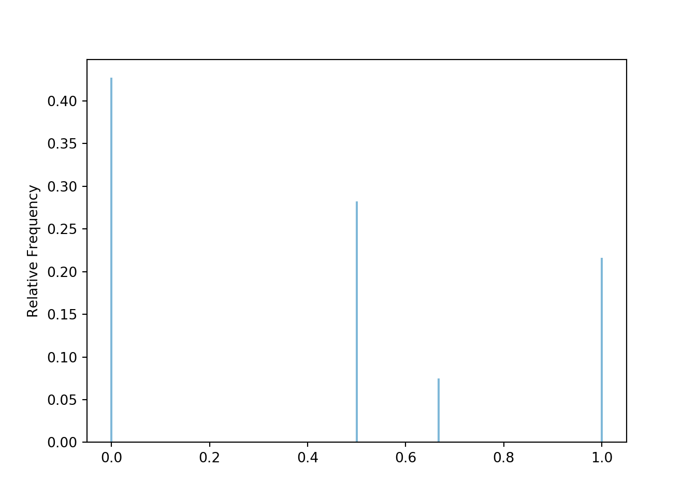
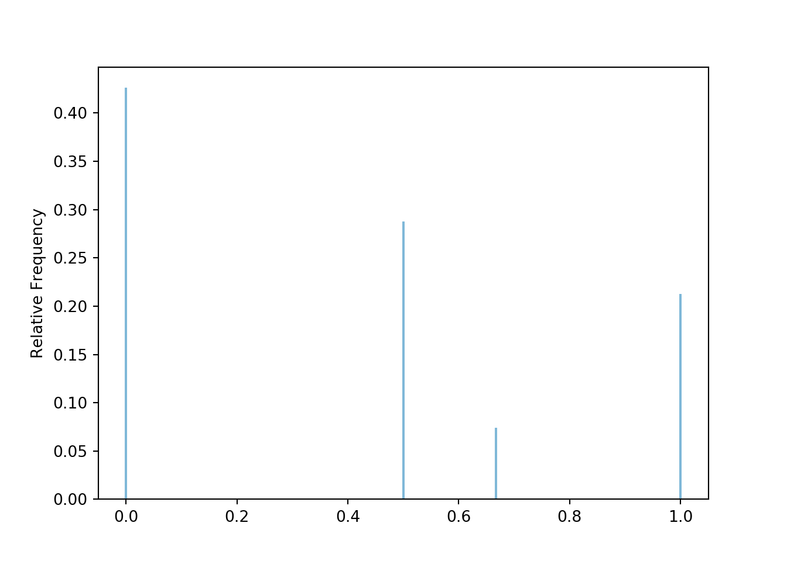
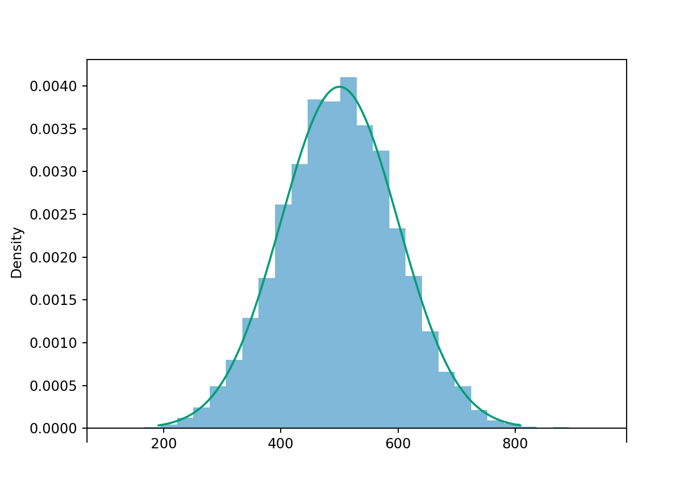
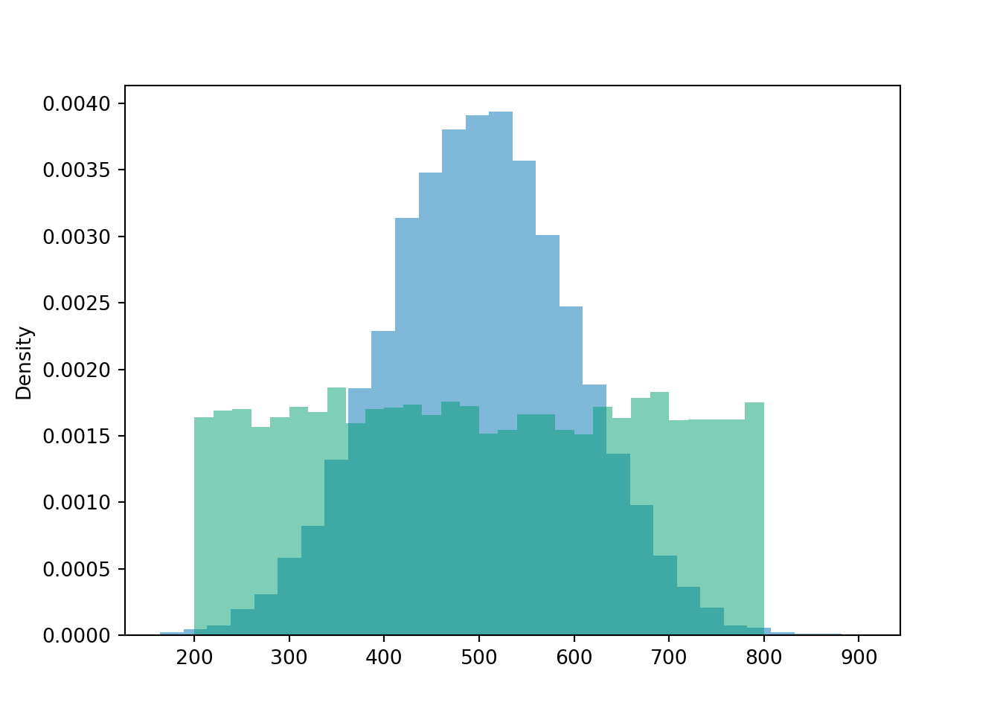
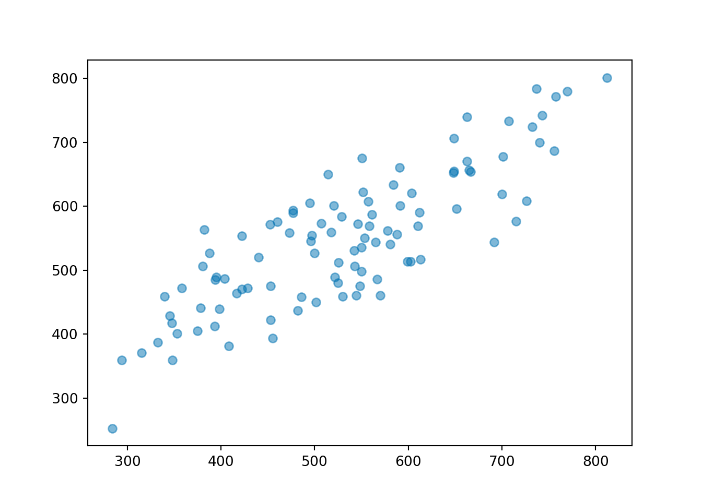
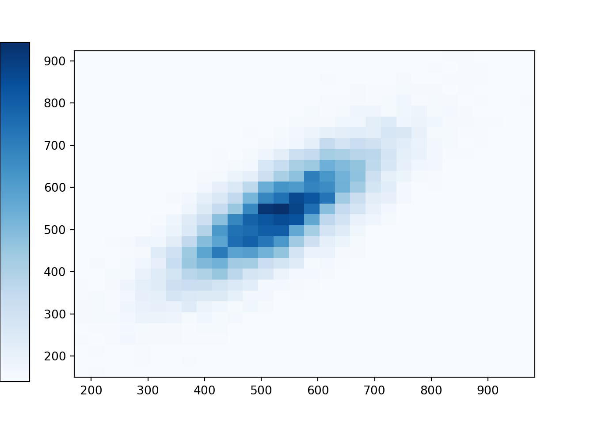
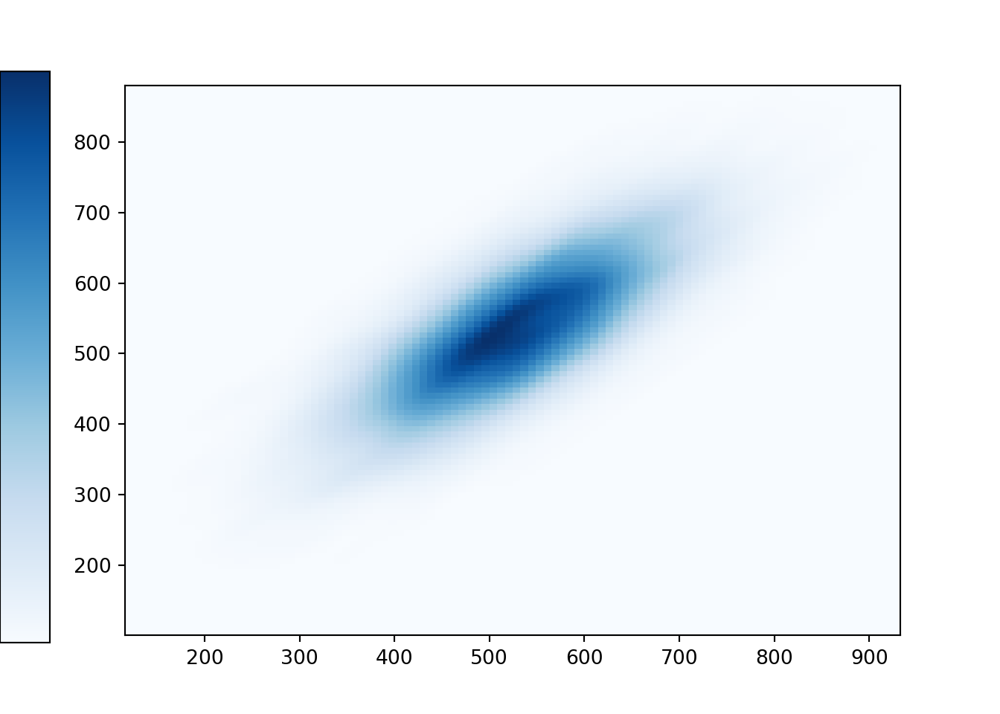

2.5 Some examples
Now that we have covered the primary mathematical objects of probability — probability spaces, events, random variables — we will investigate some examples.
The tables and plots in the previous section, as well as those in this section, are representations of distributions. The (probability) distribution of a random variable specifies the possible values of the RV and a way of determining corresponding probabilities. The distribution of a random variable specifies the long run pattern of variation of values of the random variable over many repetitions of the underlying random phenomenon. The distribution of a random variable (\(X\)) can be approximated by
- simulating an outcome of the underlying random phenomenon (\(\omega\))
- observing the value of the random variable for that outcome (\((X(\omega)\))
- repeating this process many times
- then computing relative frequencies involving the simulated values of the RV (\(x\)) to approximate probabilities of events involving the random variable (e.g., \(\IP(X\le x)\)).
We will discuss distributions in more detail in the next section, but the examples in this section will provide an introduction to some of the ideas. But as you read this section and encounter different distributions, observe that each distribution can be represented by a spinner.
2.5.1 A weighted die
The example in Section 2.2 involved a fair four-sided die. But what about a weighted die like the one in Example ???
Let \(X\) be the result of a single roll of a four-sided die. Let \(\IP\) be the probability measure corresponding to a fair die. BoxModel assumes equally likely outcomes by default, so calling BoxModel([1, 2, 3, 4]) assumes a fair die. (The default size value is 1, so BoxModel([1, 2, 3, 4]) corresponds to a single roll of a fair four-sided die.) The random variable \(X\) is just the outcome of this roll, identified by the identity function \(X(\omega) = \omega\). (Recall that a Symbulate RV is always defined in terms of a probability space and a function RV(probspace, function). The default function is the identity: \(g(u) = u\).)

The plot displays a simulation-based approximation to the distribution of \(X\) according to the probability meaure \(\IP\). We see that the four sides are equally likely. This distribution can be represented by the spinner in Figure 2.1.
Now consider the weighted die in Example ??. Let \(\IQ\) be the probability measure corresponding to the assumption that the die is weighted as in Example ??. While BoxModel assumes equally likely outcomes by default, we can specify outcomes with different probabilities using the probs option. The probability space Q in the following code corresponds to a single roll of the weighted die. Note that \(X\) is still defined via the identity function.
Q = BoxModel([1, 2, 3, 4], probs = [0.1, 0.2, 0.3, 0.4])
X = RV(Q)
plt.figure()
X.sim(10000).plot()
plt.show()
The plot displays a simulation-based approximation to the distribution of \(X\), but now according to the probability meaure \(\IQ\). This distribution can be represented by the spinner in Figure 2.3.

Figure 2.3: Spinner corresponding to a single roll of the weighted four-sided die in Example ??.
Note that in the two scenarios, (1) the sample space is the same, \(\Omega=\{1,2,3,4\}\), and (2) the random variable is the same function, \(X(\omega) = \omega\). What changes is the probability measure, from \(\IP\) (fair die) to \(\IQ\) (weighted die). Changing the probability measure changes the distribution of \(X\).
Another way to model a weighted die is with a box model with 10 tickets — one ticket labeled 1, two tickets labeled 2, three tickets labeled 3, and four tickets labeled 4 — from which a single ticket is drawn. A BoxModel can be specified in this way using the following {label: number of tickets with the label} formulation13. We will see that this formulation is especially useful when mutliple tickets are drawn from the box without replacement.
Some lessons from this example.
- Changing a probability measure changes distributions of random variables.
- Box models can handle situations without equally likely outcomes. In Symbulate,
BoxModelhas options likeprobsthat can be used to specify probabilities of individual outcomes.
2.5.2 More dice rolling
The example in Section 2.3 involved the sum \(X\) and max \(Y\) of two rolls of a fair four-sided die. In Example ?? we found \(\IP(X=4, Y=3)=2/16\). In a similar way, we can find \(\IP(X=x, Y=y)\) for each possible \((x, y)\) pair. These values, displayed in Table 2.1, specify the joint distribution of \(X\) and \(Y\).
| \(x\) \ \(y\) | | 1 | 2 | 3 | 4 |
| 2 | | 1/16 | 0 | 0 | 0 |
| 3 | | 0 | 2/16 | 0 | 0 |
| 4 | | 0 | 1/16 | 2/16 | 0 |
| 5 | | 0 | 0 | 2/16 | 2/16 |
| 6 | | 0 | 0 | 1/16 | 2/16 |
| 7 | | 0 | 0 | 0 | 2/16 |
| 8 | | 0 | 0 | 0 | 1/16 |
The joint distribution in Table 2.1 corresponds to the spinner in Figure 2.2. Once we have obtained the distribution, we now have two ways to simulate an \((X, Y)\) pair with the distribution inTable 2.1 .
- Simulate two rolls of a fair four sided die. Let \(X\) be the sum of the two values and let \(Y\) be the larger of the two rolls (or the common value if a tie).
- Spin the spinner in Figure 2.2 once and record the resulting \((X, Y)\) pair. (Recall that this spinner returns a pair of values.)
Of course, the second method requires that the distribution of \((X, Y)\) is known. But in principle, there are always two ways of simulating a value \(x\) of a random variable \(X\).
- (Simulate from the probability space.) Simulate an outcome \(\omega\) from the underlying probability space and set \(x = X(\omega)\).
- (Simulate from the distribution.) Construct a spinner corresponding to the distribution of \(X\) and spin it once to generate \(x\).
The second method requires that the distribution of \(X\) is known. However, as we will see in many examples, it is common to specify the distribution of a random variable directly without defining the underlying probability space.
Below is the Symbulate code for the second method, which corresponds to the spinner in Figure 2.2. Note that the probability space outcomes (the tickets in BoxModel) correspond to the possible \((X, Y)\) pairs, which are not equally likely (even though the 16 pairs of rolls are). We specify the probability of each outcome by using the probs option. To generate a single \((X, Y)\) pair, we spin the spinner once, and we draw one ticket from the box of pairs; this is why size = 1.
xy_pairs = [(2, 1), (3, 2), (4, 2), (4, 3), (5, 3), (5, 4), (6, 3), (6, 4), (7, 4), (8, 4)]
pxy = [1/16, 2/16, 1/16, 2/16, 2/16, 2/16, 1/16, 2/16, 2/16, 1/16]
P = BoxModel(xy_pairs, probs = pxy, size = 1, replace = True)
print(P.sim(5))## <symbulate.results.Results object at 0x00000000293BB0C8>We now wish to define the random variables \(X\) and \(Y\). An outcome of P is a pair of values. Recall that a Symbulate RV is always defined in terms of a probability space and a function RV(probspace, function). The default function is the identity: \(g(\omega) = \omega\). Therefore, RV(P) would just correspond to the pair of values generated by P. The sum \(X\) corresponds to the first coordinate in the pair and the max \(Y\) corresponds to the second. We can define these random variables in Symbulate by “unpacking” the pair as in the following14
## <symbulate.results.RVResults object at 0x00000000293BBB88>Then we can simulate many \((X, Y)\) pairs and summarize as before. The tile plot depicts the approximate joint distribution on \((X, Y)\) pairs. The impulse plots in the “margins” of the plot are the simulated “marginal distributions” of \(X\) and \(Y\).

## {(5, 4): 2042, (3, 2): 2006, (6, 4): 1998, (2, 1): 987, (4, 2): 941, (8, 4): 995, (4, 3): 2084, (7, 4): 2007, (6, 3): 987, (5, 3): 1953}We can compute \(\IP(X=4)\) from the joint distribution by summing over the possible \((X, Y)\) pairs for which \(X=4\): \(\IP(X=4) = \IP(X=4, Y=2) + \IP(X=4, Y=3)=3/16\). In the context of multiple random variables, a probability involving only one of the random variables is called a marginal probability. The marginal distribution of \(X\) is obtained by computing \(\IP(X=x)\) for each possible value of \(x\). This is accomplished by summing across the columns in Table 2.1. Similarly, the marginal distribution of \(Y\) is obtained by summing across the rows. Think of adding a total column (for \(X\)) and a total row (for \(Y\)) in the “margins” of the table. For example, the marginal distribution of \(Y\) is displayed in the following table; a simulation-based approximation is displayed in Figure ??.
| \(y\) | | 1 | 2 | 3 | 4 |
|---|---|---|---|---|
| \(\IP(Y=y)\) | 1/16 | | 3/16 | 5/16 | | 7/16 |
The marginal distributions of \(X\) and \(Y\) can be depicted as spinners, as in Figure 2.4.


Figure 2.4: Marginal distributions of \(X\) (left) and \(Y\) (right), the sum and the larger (or common value if a tie) of two rolls of a fair four-sided die.
Example 2.2 (Don’t do what Donny Don’t does.) Donny says “Forget the spinner in Figure 2.2. I can simulate an \((X, Y)\) pair just by spinning each of the spinners in Figure 2.4 once.” Is Donny correct? If not, can you help him see why not?
Solution. to Example 2.2
Donny is not correct. Yes, spinning the \(X\) spinner in Figure 2.4 will generate values of \(X\) according to the proper marginal distribution, and similarly for \(Y\). However, spinning each of the spinners will not produce \((X, Y)\) pairs with the correct joint distribution. For example, Donny’s method could produce \(X=2\) and \(Y=4\), which is not a possible \((X, Y)\) pair. Donny’s method treats the values of \(X\) and \(Y\) as if they were independent; the result of the \(X\) spin would not change what could happen with the \(Y\) spin (since the spins are physically independent). However, the \(X\) and \(Y\) values are related. For example, if \(X=2\) then \(Y\) must be 1; if \(X=4\) then \(Y\) must be 2 or 3. The joint distribution spinner in Figure 2.2 correctly reflects the relationship between \(X\) and \(Y\). But in general, you cannot recover the joint distribution from the marginal distributions, which is what Donny is attempting to do. Just because you know the row and column totals doesn’t mean you know all the values of the interior cells in the joint distribution table.
Donny’s method corresponds to (1) rolling the die twice and summing to get \(X\), (2) rolling the die two more times and finding the larger roll to get \(Y\). Essentially, Donny is not using the same probability space for \(X\) and \(Y\), and therefore events involving both random variables cannot be studied. In Symbulate, Donny’s code — which would produce an error — would look like
X = RV(BoxModel([1, 2, 3, 4], size = 2), sum)
Y = RV(BoxModel([1, 2, 3, 4], size = 2), max)
(X & Y).sim(10000)
### Error: Events must be defined on same probability space.In Donny’s code, his random variables are defined on different probability spaces; one box model is used to generate the rolls for \(X\) and a separate box model is used to generate the rolls for \(Y\). As we have mentioned a few times, random variables (and events) must all be defined on the same probability space15.
Example 2.3 (Don’t do what Donny Don’t does.) Donny says “I see what you mean about needing the spinner in Figure 2.2 to simulate \((X, Y)\) pairs. So then forget the spinners in Figure 2.4. If I want to simulate \(X\) values, I could just spin the spinner in Figure 2.2 and ignore the \(Y\) values.” Is Donny’s method correct? If not, can you help him see why not?
Solution. to Example 2.3
Donny is correct! The joint distribution spinner in Figure 2.2 correctly produces \((X, Y)\) pairs according to the joint distribution in Table 2.1. Ignoring the \(Y\) values is like “summing across the rows” and only worrying about what happens in total for \(X\). For example, in the long run, 1/16 of spins will generate (4, 2) and 2/16 of spins will generate (4, 3), so ignoring the \(y\) values, 3/16 of spins will return an \(x\) value of 4. From the joint distribution you can always find the marginal distributions (by finding row and column totals). (Donny’s method does work, but it does require more work than necessary. If you really only needed to simulate \(X\) values, you only need the distribution of \(X\) and not the joint distribution of \(X\) and \(Y\), so you could use the \(X\) spinner in Figure 2.4.)
Some lessons from this example.
- There are two ways to simulate a value of a random variable.
- Simulate an outcome from the underlying probability space and evaluate the random variable for the simulated outcome.
- Find the distribution of the random variable, and simulate a value from that distribution (e.g., by constructing a spinner).
- To simulate an \((X, Y)\) pair it is, in general16, not sufficient to simulate a value of \(X\) from its marginal distribution and a value of \(Y\) from its marginal distribution. Instead, a pair \((X, Y)\) must be simulated from the joint distribution.
2.5.3 Proportion of coin flips immediately following heads that result in heads
Recall the coin flipping problem in Section ??. Flip a fair coin four times and record the results in order. For the recorded sequence, compute the proportion of the flips which immediately follow a H that result in H. What value do you expect for this proportion? (If there are no flips which immediately follow a H, i.e. the outcome is either TTTT or TTTH, discard the sequence and try again with four more flips.)
For example, the sequence HHTT means the the first and second flips are heads and the third and fourth flips are tails. For this sequence there are two flips which immediately followed heads, the second and the third, of which one (the second) was heads. So the proportion in question for this sequence is 1/2.
We saw in Example ?? that the quantity of interest, the proportion Proportion of H following H, is a random variable. We define the random variables
- \(Z\), the number of flips immediately following H.
- \(Y\), the number of flips immediately following H that result in H.
- \(X=Y/Z\), the proportion of flips immediately following H that result in H.
Table ?? displays the 16 possible outcomes in the sample space along with the value of \(X, Y, Z\) for each outcome. Note that \(X\) takes values in \(\{0, 1/2, 2/3, 1\}\).
Now let’s assume the 16 outcomes are equally likely. This corresponds to assuming (1) the coin is fair (that is, any flip is equally likely to land on H or T), and (2) the result of one flip has no bearing on the others (that is, the flips are independent). One technicality is that \(Y\) and \(X\) are not defined for the outcomes TTTH and TTTT and we assume that these outcomes are discarded. One way to model this scenario is with a probability measure \(\IP\) that assigns probability 0 to the event \(\{TTTH, TTTT\}\) and probability 1/14 to each of the remaining outcomes. Using Table ?? we can summarize the behavior of \(X\) according to the probability measure \(\IP\). Namely, we compute \(\IP(X=x)\) for each possible value of \(x\). These values, reported in 2.2, describe the distribution of the random variable \(X\), which is depicted in the spinner in Figure
| \(x\) | | \(\IP(X=x)\) | | (Corresponding outcomes) | |
|---|---|---|
| 0 | | 6/14 | | \(\{HTHT, HTTH, HTTT, THTT, THTH, TTHT\}\) | |
| 1/2 | | 4/14 | | \(\{HHTH, HTHH, HHTT, THHT\}\) | |
| 2/3 | | 1/14 | | \(\{HHHT\}\) | |
| 1 | | 3/14 | | \(\{HHHH, THHH, TTHH\}\) | |

Figure 2.5: Spinner corresponding to the distribution of the proportion of flips immediately following H that result in H, for four flips of a fair coin.
We now use Symbulate to conduct a simulation. We first define the probability space of 16 equally likely outcomes, but when we run the simulation we’ll discard TTTH and TTTT, keeping only those repetitions which result in one of the other 14 outcomes.
We define the probability space of 16 equally likely outcomes via a box model: P = BoxModel([0, 1], size = 4). When dealing with sequences of binary outcomes it is useful to define the outcome of interest as 1 and the other outcome as 0. In coin flips, we can define H as 1 and T as 0. For example, HHTT would be (1,1,0,0). With this formulation we can count the number of heads in a sequence by summing the 0/1 values in the sequence. If we sum the elements in the outcome sequence, we add 1 every time we see a H and 0 every time we see a T, resulting in the total number of H. For example (1, 1, 0, 0) leads to 1+1+0+0=2 H.
We will define the random variables \(X, Y, Z\) in Symbulate. Remember that a random variable is a function defined on the probability space. In Section 2.2, simple built-in functions like sum and max were used to define RVs. For example, the random variable which counts the total number of H in the sequence of flips (using the 0/1 formulation) would be RV(P, sum). However, it is also possible to program custom functions to use in defining Symbulate random variables, e.g., X=RV(P, custom_function). You just need to make sure that the custom function takes as an input an object corresponding to the output of the probability space P.
The custom function count_flips_following_H, defined using Python code below, takes as an input a sequence of coin flips and returns the number of flips in the sequence which immediately followed H; this will be used to define \(Z\). Similarly, the custom function count_H_following_H counts the number of flips immediately following H that result in H; this will be used to define \(Y\). For now, you don’t need to worry too much about the Python code. Just know that the functions do what they’re supposed to do. (And note that with the 0/1 formulation, we are counting H using sum.)
def count_flips_following_H(omega):
return sum(omega[0:(len(omega) - 1)])
def count_H_following_H(omega):
return sum(a * b for a, b in zip(omega[1:len(omega)], omega[0:len(omega) - 1]))
# An example outcome
outcome = (1, 1, 0, 0)
print(count_flips_following_H(outcome), count_H_following_H(outcome))## 2 1Now we have everything we need to set up the probability space and random variables in Symbulate. Remember that transformations of random variables defined on the sample probability space are random variables. The same is true in Symbulate. Once we have defined Symbulate RVs Z and Y, we can define X = Y / Z, which will also be a Symbulate RV.
P = BoxModel([1, 0], size = 4)
Z = RV(P, count_flips_following_H)
Y = RV(P, count_H_following_H)
X = Y / Z
# An example outcome
outcome = (1, 1, 0, 0)
print(Z(outcome), Y(outcome), X(outcome))## Warning: Calling an RV as a function simply applies the function that defines the RV to the input, regardless of whether that input is a possible outcome in the underlying probability space.
## Warning: Calling an RV as a function simply applies the function that defines the RV to the input, regardless of whether that input is a possible outcome in the underlying probability space.
## Warning: Calling an RV as a function simply applies the function that defines the RV to the input, regardless of whether that input is a possible outcome in the underlying probability space.
## 2 1 0.5Now we run the simulation. Recall that the probability space corresponds to the 16 equally likely outcomes, but we want to discard TTTH and TTTT, the outcomes for which \(Z=0\). We do this by conditioning on the event \(\{Z>0\}\) (coded in Symbulate as (Z>0)). We will cover conditioning in much more detail starting in Chapter ??. For now, just read the code (X | (Z > 0) ) as “keep values of X only for simulated repetitions for which \(Z>0\) (and discard the rest)”. In the presence of conditioning, sim doesn’t count the values it discards, so the simulation below will continue to run until 14000 repetitions that satisfy (Z>0) are obtained.

## {0.0: 5953, 1.0: 3024, 0.5: 3992, 0.6666666666666666: 1031}We see that the results of the simulation are consistent with the theoretical values in Table 2.2. That is, the simulated (long run) relative frequencies are close to the theoretical probabilities.
As discussed in Section ??, one quantity of interest is the long run average of \(X\), which we can approximate by computing the mean (average) of the 14000 simulated values.
## 0.4076666666666666We see the average of simulated values of \(X\) is close to 0.4. That is, 0.4 (roughly) is the average value of the proportion of H following H that we would expect to see in the long run over many sets of four fair coin flips. This is decidely less than 1/2; we think most people would find this surprising. The distribution of \(X\) is not centered at 0; it is more likely for \(X\) to be 0 than to be either 2/3 or 1. This imbalance pulls the long run average down below 0.5. We will return to this idea later.
Some lessons from this example.
- The proportion of flips that immediately follow H that result in H is a random variable, and not a single number. This random variable has a distribution that is not centered at 1/2; the proportion of interest is more likely to be below 1/2 than above 1/2.
- A random variable is a function defined on a problem space. In Symbulate, custom functions can be used to define
RVs. - Both mathematically and in Symbulate, transformations of random variables defined on the same probability space are random variables.
- When dealing with sequences of binary outcomes it is useful to define the outcome of interest as 1 and the other outcome as 0. With this formulation, counting the 1s is equivalent to summing.
- We saw a brief introduction to how conditioning on event, with the vertical bar
|, can be used to keep only those simulated repetitions that satisfy some criteria.
2.5.4 Outcomes on a continuous scale
Uniform distributions are the continuous analog of equally likely outcomes. The standard uniform distribution is the Uniform(0, 1) distribution corresponding to the spinner in Figure ?? which returns values between17 0 and 1. Recall that the values in the picture are rounded to two decimal places, but the spinner represents an idealized model where the spinner is infinitely precise so that any real number between 0 and 1 is a possible value. We assume that the (infinitely fine) needle is “equally likely” to land on any value between 0 and 1.
The following Symbulate code defines a probability space representing the Uniform(0, 1) model, and a random variable equal to the result of a single spin: \(U(\omega)=\omega\). Recall that the default function used to define a Symbulate RV is the identity. The plot displays 100 simulated values. Note that the values seem to be “evenly spread” between 0 and 1.

The usual plot, and the Symbulate default, for summarizing values on a continuous scale is a histogram. A histogram groups the observed values into “bins” and plots relative frequencies for each bin18. Typically, in a histogram areas of bars represent relative frequencies; in which case the axis which represents the length of the bars is called “density”. It is recommended that the bins all have the same width so that area and length of the bars are equivalent, with the only difference being the scale on the axis (that is, with equal bin widths, density is a linear rescaling of height and bars with the same height represent the same area/relative frequency.)

The standard uniform distribution, Uniform(0, 1), is a distribution on the interval \([0, 1]\). The uniform distribution on the interval \([a, b]\), for \(a<b\), is called the Uniform(\(a\), \(b\)) distribution. Uniform distributions on other intervals can be obtained from the Uniform(0, 1) distribution via a linear rescaling.
- A linear rescaling is a transformation of the form \(g(u) = a +bu\). For example, converting temperature from Celsius to Fahrenheit using \(g(u) = 32 + 1.8u\) is a linear rescaling.
- A linear rescaling “preserves relative interval length” in the following sense.
- If interval A and interval B have the same length in the original measurement units, then the rescaled intervals A and B will have the same length in the rescaled units. For example, [0, 10] and [10, 20] Celsius, both length 10 degrees Celsius, correspond to [32, 50] and [50, 68] Fahrenheit, both length 18 degrees Fahrenheit.
- If the ratio of the lengths of interval A and B is \(r\) in the original measurement units, then the ratio of the lengths in the rescaled units is also \(r\). For example, [10, 30] is twice as long as [0, 10] in Celsius; for the corresponding Fahrenheit intervals, [50, 86] is twice as long as [32, 50].
Suppose \(U\) has a Uniform(0, 1) distribution. Then for any \(a<b\), the linear rescaling \(X = a + (b-a)U\) has a Uniform(\(a\), \(b\)) distribution. (This rescaling maps 0 to \(a\) and 1 to \(b\), which corresponds to a line with y-intercept \(a\) and slope \((b-a)/(1-0)\).)
For example, suppose that SAT Math scores have a uniform distribution on the interval \([200, 800]\). (This is certainly NOT true, and we will consider a more realistic distribution in Section 2.5.8.) If \(X\) denotes Math score, then we can simulate values of \(X\) by spinning the Uniform(0, 1) spinner to obtain \(U\) and set \(X = 200 + 600 U\).


## 0.173 0.3374 0.5023The plots show that the values are roughly uniformly distributed between 200 and 800: about 17% of values are between 200 and 300, about 17% between 300 and 400, about 17% between 400 and 500. Recall from Section ?? that for a continuous uniform distribution, probability is a ratio of lengths. Each of these intervals is length 100, and the total length of the interval of possible values is 600, so the theoretical probability for each interval is \(100/600\approx 0.167\).
Note that the shape of the histogram for the SAT scores is similar to that of the Uniform(0, 1) values. the only difference is the labeling on the horizontal axis. Because a linear rescaling preserves relative interval length, it will not change the shape of the histogram. That is, a linear rescaling does not change the shape of the distribution, only the range of possible values.
For example, on the original [0, 1] scale, the intervals (0.1, 0.2) and (0.5, 0.6) both are of length 0.1 and so they each have probability 0.1/1. On the [200, 800] scale, these intervals correspond, respectively, to (260, 320) and (500, 560), each an interval of length 60 with probability \(60/600=0.1\). Roughly, all the values in the (0.1, 0.2) bin in the original scale map to the (260, 320) bin in the new scale, similarly for (0.5, 0.6) to (500, 560). Therefore, the shape of the histogram is preserved.
Example 2.4 Let \(\IP\) be the probabilty space corresponding to the Uniform(0, 1) spinner and let \(U\) represent the result of a single spin. Define \(V=1-U\).
- Does \(V\) result from a linear rescaling of \(U\)?
- What are the possible values of \(V\)?
- Is \(V\) the same random variable as \(U\)?
- Find \(\IP(U \le 0.1)\) and \(\IP(V \le 0.1)\).
- Sketch a plot of what the histogram of many simulated values of \(V\) would look like.
- Does \(V\) have the same distribution as \(U\)?
- Yes, \(V\) result from the linear rescaling \(u\mapsto 1-u\) (intercept of 1 and slope of \(-1\).)
- \(V\) takes values in the interval [0,1]. (Basically, this transformation just changes the direction of the spinner from clockwise to counterclockwise. The axis on the usual spinner has values \(u\) increasing clockwise from 0 to 1. Applying the transformation \(1-u\), the values would decrease clockwise from 1 to 0.)
- No. \(V\) and \(U\) are different random variables. If the spin lands on \(\omega=0.1\), then \(U(\omega)=0.1\) but \(V(\omega)=0.9\). \(V\) and \(U\) return different values for the same outcome; they are measuring different things.
- \(\IP(U \le 0.1) = 0.1\) and \(\IP(V \le 0.1)=\IP(1-U \le 0.1) = \IP(U\ge 0.9) = 0.1\). Note, however, that these are different events: \(\{U \le 0.1\}=\{0 \le \omega \le 0.1\}\) while \(\{V \le 0.1\}=\{0.9 \le \omega \le 1\}\). But each is an interval of length 0.1 so they have the same probability according to the uniform probability measure.
- Since \(V\) is a linear rescaling of \(U\), the shape of the histogram of simulated values of \(V\) should be the same as that for \(U\). Also, the possible values of \(V\) are the same as those for \(U\). So the histograms should look identical (aside from natural simulation variability).
- Yes, \(V\) has the same distribution as \(U\). While for any single outcome (spin), the values of \(V\) and \(U\) will be different, over many repetitions (spins) the pattern of variation of the \(V\) values, as depicted in a histogram, will be identical to that of \(U\).

Some lessons from this example.
- A histogram can be used to summarize the distribution of a random variable that takes values on a continuous scale.
- When plotting values on a continuous scale in a histogram, relative frequencies are represented by areas.
- A linear rescaling of a random variable does not change the basic shape of its distribution, just the range of possible values.
- Do NOT confuse a random variable with its distribution.
- The RV is the numerical quantity being measured
- The distribution is the long run pattern of variation of many observed values of the RV
- Two random variables can have the same (long run) distribution, even if the values of the two random variables are never equal on any particular repetition (outcome).
2.5.5 A logarithmic transformation
The preceding section illustrated that a linear rescaling does not change the shape of a distribution, only the range of possible values. But what about a non-linear rescaling, like a logarithmic or square root transformation? In contrast to a linear rescaling, a non-linear rescaling does not preserve relative interval length, so we might expect that a non-linear rescaling can change the shape of a distribution. We’ll investigate by considering the Uniform(0, 1) spinner and a logarithmic19 transformation.
Let \(\IP\) be the probabilty space corresponding to the Uniform(0, 1) spinner and let \(U\) represent the result of a single spin. Attempting the transformation \(\log(U)\) leads to two minor technicalities.
- Since \(U\in[0, 1]\), \(\log(U)<0\). To obtain positive values we consider \(-\log(U)\), which takes values in \([0,\infty)\).
- Technically, applying \(-\log(u)\) to the values on the axis of the Uniform(0, 1) spinner, the resulting values would decrease from \(\infty\) to 0 clockwise. To make the values start at 0 and increase to \(\infty\) clockwise, we consider \(-\log(1-U)\). (We saw in the previous section the transformation \(u \to 1-u\) basically just changes direction from clockwise to counterclockwise.)
Therefore, it’s a little more convenient to consider the random variable \(X=-\log(1-U)\) which takes values in \([0,\infty)\). Remember: a transformation of a random variable is a random variable. Also, always be sure to identify the possible values that a random variable can take.
The following code defines \(X\) and plots a few simulated values. Notice that values near 0 occur with higher frequency than larger values. For example, there are many more simulated values of \(X\) that lie in the interval \([0, 1]\) than in the interval \([3, 4]\), even though these intervals both have length 1.

Now we simulate many values of \(X\) and summarize the results in a histogram.

It should be clear that the simulated values of \(X\) do not follow a uniform distribution. Values near 0 occur with greater frequency than larger values. The non-linear log transformation changed the shape of the distribution.
To get some intuition behind why the shape changes, consider the following illustration. Consider intervals in increments of 0.1, starting from 0, on the original [0, 1] scale. These intervals each have length 0.1 and so each have probability 0.1 according to the uniform probability measure. Now consider the corresponding transformed intervals.
- [0, 0.1] maps to20 [0, 0.105], an interval of length 0.105.
- [0.1, 0.2] maps to [0.105, 0.223], an interval of length 0.118.
- [0.2, 0.3] maps to [0.223, 0.357], an interval of length 0.134.
- [0.3, 0.4] maps to [0.357, 0.511], an interval of length 0.154.
- [0.4, 0.5] maps to [0.511, 0.693], an interval of length 0.182, and so on.
We see that the logarithmic transformation does not preserve relative interval length, rather it “stretches out” the intervals. However, each of the above intervals has a probability of 0.1. As the transformation stretches the intervals, the 0.1 probability gets “spread” over different lengths of values. Since probability/relative frequency is represented by area in the histogram, if two regions of differing length have the same area, then they must have different heights.
Here’s a similar illustration, but from the reverse perspective. In the transformed scale, consider the intervals [0,1], [1, 2], [2, 3]. Each of these intervals has length 1, but they correspond to intervals of differing length in the original scale, and hence intervals of different probability.
- [0, 1] corresponds to21 [0, 0.632], and interval with probability 0.632.
- [1, 2] corresponds to [0.632, 0.865], and interval with probability 0.233.
- [2, 3] corresponds to [0.865, 0.950], and interval with probability 0.086.
Notice that the shape of the histogram depicting the simulated values of \(X\) appears that it can be approximated by a smooth curve. This smooth curve is an idealized model of what would happen in the long run if
- we kept simulating more and more values, and
- made the histogram bin widths smaller and smaller.
The following plot illustrates the results of 100,000 simulated values of \(X\) summarized in a histogram with 1000 bins. The command Exponential(1).plot() overlays the smooth solid curve modeling the theoretical shape of the distribution of \(X\) (called the “Exponential(1)” distribution).
plt.figure()
X.sim(100000).plot(bins=1000)
Exponential(1).plot() # overlays the smooth curve
plt.show()
What about a spinner which generates values according to the distribution in Figure ??? The “simulate from the probability space” method for simulating of \(X\) values entailed
- Spinning the Uniform(0, 1) spinner to get a value \(U\)
- Setting \(X=-\log(1-U)\)
These two steps can be combined by relabeling the values on the axis of the spinner according to the transformation \(u\mapsto -\log(1-u)\). For example, replace 0.1 by \(-\log(1-0.1)\approx 0.105\); replace 0.9 by \(-\log(1-0.9)\approx 2.30\). This transformation results in the spinner in Figure 2.6.

Figure 2.6: A spinner representing the distribution in Figure ?? (the “Exponential(1)” distribution.). The spinner is duplicated on the right; the highlighted sectors illustrate the non-linearity of axis values and how this translates to non-uniform probabilities.
Pay special attention to the values on the axis; they do not increase in equal increments. (As with the Uniform(0, 1) spinner, while only certain values are marked on the axis, we consider an idealized model in which any value in the continuous interval \([0, \infty)\) is a possible result of the spin.) The spinner on the right in Figure 2.6 is the same as the one on the left, with the intervals [0, 1], [1, 2], and [2, 3] highlighted with their respective probabilities. Putting a needle on this spinner that is “equally likely” to land anywhere on the axis, the needle will land in the interval [0, 1] with probability 0.632, in the interval [1, 2] with probability 0.233, etc. Therefore, values generated using this spinner, which represents the “Exponential(1)” distribution, will follow the pattern in Figure ??. Figure ?? illustrations this “simulate from a distribution” method; values of \(X\) are generated directly from an Exponential(1) distribution, rather than first generating \(U\) and then transforming.

Some lessons from this example.
- Remember: a transformation of a random variable, both mathematically and in Symbulate.
- Be sure to always specify the possible values a random variable can take.
- A nonlinear transformation of a random variable changes the shape of its distribution.
- The shape of the histogram of simulated continuous values can be approximated by a smooth curve.
- Spinners can be used to generate values from non-uniform distributions by applying non-linear transformations to values on the spinner axis.
2.5.6 Continuous analog of rolling two dice
In Section 2.3 we studied the joint distribution of the sum and max of two fair-four sided dice rolls. Now we consider a continuous analog. Let \(\IP\) be the probability space corresponding to two spins of the Uniform(0, 1) spinner, and let \(X\) be the sum of the two spins, and \(Y\) the larger spin (or the common value if a tie). We saw that in Section 2.3, we could model a two rolls of a fair-four sided die using DiscreteUniform(1, 4) ** 2. Similarly, we can model two spins of the Uniform(0, 1) spinner with Uniform(0, 1) ** 2.
We start by looking at the joint distribution of the two spins, \((U_1, U_2)\), which take values in \([0, 1]\times[0, 1]\).

## NoneWe see that the \((U_1, U_2)\) pairs are roughly “evenly spread” throughout \([0, 1]\times [0, 1]\). The scatterplot displays each individual pair. We can summarize the distribution of many pairs with a two-dimensional histogram. To construct the histogram, the space of values \([0, 1]\times[0, 1]\) is chopped into rectangular bins and the relative frequency of pairs which fall within each bin is computed. While for a one-dimensional histogram area represents relative frequency, volume represents relative frequency in a two-dimensional histogram, with the height of each rectangular bin on a “density” scale represented by its color intensity.
## Error in py_call_impl(callable, dots$args, dots$keywords): ValueError: invalid literal for int() with base 10: ''
##
## Detailed traceback:
## File "<string>", line 1, in <module>
## File "C:\Users\kjross\Anaconda3\lib\site-packages\symbulate\results.py", line 538, in plot
## new_labels.append(int(label.get_text()) / len(x))
Now we let \(X\) be the sum and \(Y\) the max of the two rolls22. First consider the possible values of \((X, Y)\). Marginally, \(X\) takes values in \([0, 2]\) and \(Y\) takes values in \([0, 1]\). However, not every value in \([0, 2]\times [0, 1]\) is possible.
- We must have \(Y \ge 0.5 X\). For example, if \(X=1.5\) then \(Y\) must at least 0.75, because if the larger of the two spins were less than 0.75, then the sum must be less than 1.5.
- We must have \(Y \le X\). For example, if \(Y=0.5\), then one of the spins is 0.5 and the other one is at least 0, so the sum must be at least 0.5.
Therefore, the possible values of \((X, Y)\) lie in the set \(\{(x, y): 0\le x\le 2, 0 \le y\le 1, 0.5x \le y, y\le x\}\), which can be simplified slightly as \(\{(x, y): 0\le x \le 2, 0.5 x\le y \le \min(1, x)\}\). This set is represented by the triangular region in the plots below.
P = Uniform(0, 1) ** 2
X = RV(P, sum)
Y = RV(P, max)
xy = (X & Y).sim(100)
plt.figure()
xy.plot()
plt.show()
## <symbulate.results.RVResults object at 0x0000000034C1D5C8>## Error in py_call_impl(callable, dots$args, dots$keywords): ValueError: invalid literal for int() with base 10: ''
##
## Detailed traceback:
## File "<string>", line 1, in <module>
## File "C:\Users\kjross\Anaconda3\lib\site-packages\symbulate\results.py", line 538, in plot
## new_labels.append(int(label.get_text()) / len(x))
We see that \((X, Y)\) pairs are roughly uniformly distributed within the triangular region of possible values. Consider a single \((X, Y)\) pair, say (0.8, 0.5). There are two outcomes — that is, pairs of spins — that for which \(X=0.8, Y=0.5\), namely (0.5, 0.3) and (0.3, 0.5). Like (0.8, 0.5), most of the possible \((X, Y)\) values correspond to exactly two outcomes. The only ones that do not are the values with \(X = Y/2\) that lie along the western border of the triangular region. The pairs \((X, 2X)\) only correspond to exactly one outcome. For example, the only outcome corresponding to (1, 0.5) is (0.5, 0.5) (that is, spin 0.5 on both spins). However, we will see that the probability that a continuous pair of values \((X, Y)\) lies along a line like \(Y=2X\) is 0. Therefore, roughly each pair in the triangular region corresponds to exactly two outcomes, and since the outcomes are uniformly distributed (over \([0, 1]\times[0, 1]\)) then the \((X, Y)\) pairs are uniformly distributed (over the triangular region of possible values).
We now consider the marginal distributions of \(X\) and \(Y\).
## Error in py_call_impl(callable, dots$args, dots$keywords): ValueError: invalid literal for int() with base 10: ''
##
## Detailed traceback:
## File "<string>", line 1, in <module>
## File "C:\Users\kjross\Anaconda3\lib\site-packages\symbulate\results.py", line 538, in plot
## new_labels.append(int(label.get_text()) / len(x))
The marginal distribution of \(X\) has highest density near 1 and lowest density near 0 and 2. Intuitively, there is only one pair of spins (0, 0) for which the sum is 0; similarly for a sum of 2. But there are many pairs for which the sum is 1: (0, 1), (1, 0), (0.2, 0.8), (0.5, 0.5), etc. Recall that for the dice rolls, we could obtain the marginal distribution of \(X\) by summing the joint distribution over all \(Y\) values. Similarly, we can find the marginal density of \(X\) by aggregating over all possible values of \(Y\). For each possible value of \(X\), “collapse” the joint histogram vertically over all possible values of \(Y\). Imagine the joint histogram is composed of stacks of blocks, one for each bin, each stack of the same height (because the values are uniformly distributed over the triangular region). To get the marginal density for a particular \(x\), take all the stacks corresponding to that \(x\), for different values of \(y\), and stack them on top of one another. There will be the most stacks for \(x\) values near 1 and the fewest stacks for \(x\) values near 0 or 2. In other words, the aggregated density along “vertical strips” is largest for the vertical strip for \(x=1\).
Similarly reasoning applies to find the marginal distribution of \(Y\). The density increases with \(y\). Intuitively, there is only one pair of spins, (0, 0), for which \(Y=0\), but many pairs of spins for which \(Y=1\), e.g., (0, 1), (1, 0), (1, 0.5), (0.7, 1), etc.

Finally, observe that the plots in this section look like continuous versions of the plots in Section 2.3 (aside from the scale; the dice rolls take values in \(\{1, 2, 3, 4\}\) while the spins take values in \([0, 4]\).) However, it took a little more work in this section to think about what the joint or marginal distributions might look like. When studying continuous random variables, it is often helpful to think about how a discrete analog behaves.
Some lessons from this example.
- The joint distribution of values on a continuous scale can be visualized in a two-dimensional histogram.
- Remember to always identify possible values of random variables, including possible pairs in a joint distribution.
- The marginal distribution of a single random variable can be obtained from a joint distribution by aggregating or “collapsing” over the values of the other random variables.
- When studying continuous random variables, it is often helpful to think about how a discrete analog behaves.
2.5.7 SAT Math scores
Now suppose we want to simulate the SAT Math score of a single randomly selected student. Our spinner would now be labeled with values from 200 to 800 (instead of 0 to 1). However, if the values were equally spaced from 200 to 800, like in the Uniform spinner, this would not lead to very realistic SAT scores. The average SAT Math score is around 500, and a much higher percentage of students score closer to average (500) than to the extreme scores of 200 or 800.
For SAT Math scores, we might use a spinner like the following. Notice that the values on the spinner axis are not equally spaced. Even though only some values are displayed on the spinner axis, imagine this spinner represents an infinitely fine model where any value between 200 and 800 is possible23.

Figure 2.7: A spinner representing the “Normal(500, 100)” distribution. The spinner is duplicated on the right; the highlighted sectors illustrate the non-linearity of axis values and how this translates to non-uniform probabilities.
Since the axis values are not evenly spaced, different intervals of the same length will have different probabilities. For example, the probability that this spinner lands on a value in the interval [400, 500] is about 0.341, but it is about 0.136 for the interval [300, 400].
Consider what the distribution of values simulated using this spinner would look like.
- About half of values would be below 500 and half above
- Because axis values near 500 are stretched out, values near 500 would occur with higher frequency than those near 200 or 800.
- The shape would be symmetric since the spacing below 500 mirrors that above. For example, about 34% of values would be between 400 and 500, and also 34% between 500 and 600.
- About 68% of values would be between 400 and 600.
- About 95% of values would be between 300 and 700.
And so on. We could compute percentages for other intervals by measuring the areas of corresponding sectors on the circle to complete the pattern of variability that values resulting from this spinner would follow. This particular pattern is called a “Normal(500, 100)” distribution24, and it is illustrated in the following plots.

## <symbulate.results.RVResults object at 0x0000000029BA7988>Simulating lots of values, we see that the histogram appears like it can be approximated by a smooth, “bell-shaped” curve, called a Normal density.
x = X.sim(10000)
plt.figure()
x.plot() # plot the simulated values
Normal(500, 100).plot() # plot the density
plt.show()
The parameter 500 represents the long run average (a.k.a. mean) value. Calling x.mean() will compute an average as usual: sum the 10000 simulated values and divide by 10000. This average should be close to 500. The more simulated values included in the average, the closer we would expect the simulated average value to be to 500.
## 499.3106462021636The parameter 100 represents the standard deviation, which is a measure of degree of variability. While the average is 500, the values vary about that average. Many values are close to the average, but some are farther away. The standard deviation measures, roughly, the average distance of the values from their mean. Calling x.sd() will compute the distance of each of the 10000 simulated from the mean and then average these distances.
## 98.95717397441405Technically, to compute the standard deviation you must first square all the distances, then average, then take the square root. (We will see more on standard deviation in Section XX.)
## 98.95717397441405For comparison, consider values from the Uniform(200, 800) distribution. While the Uniform(200, 800) and Normal(500, 100) distributions have the same mean, the Uniform(200, 800) has a larger standard deviation than the Normal(500, 100) distribution. In comparison to a Normal(500, 100) distribution, a Uniform(200, 800) distribution will give higher probability to ranges of values near the extremes of 200 and 800, as well as lower probability to ranges of values near 500. Thus, there will be more values far from the mean of 500 and fewer values close, and so the average distance from the mean and hence standard deviation will be larger. The standard deviation of values from a Uniform(200, 800) distribution is about 173.
plt.figure()
RV(Normal(500, 100)).sim(10000).plot()
RV(Uniform(200, 800)).sim(10000).plot()
plt.show()
Some lessons from this example.
- Spinners can be used to generate values from non-uniform distributions by applying non-linear transformations to values on the spinner axis.
- Normal distributions are common models of situations where the pattern of variability follows a bell-shaped curve centered at the average value.
- Variability is an essential feature of a distribution. Standard deviation measures degree of variability in terms of the average distance from the mean.
2.5.8 SAT Math and Reading scores
Now consider randomly selecting an SAT taker and recording both their Math and Reading score. Suppose we want to conduct an appropriate simulation.
Donny Don’t says: “That’s easy; just spin the SAT spinner twice, once for Math and once for Reading.” Do you agree?
You should not agree with Donny, for two reasons.
- It’s possible that the distribution of SAT Math scores follow a different pattern than SAT Reading scores. So we might need one spinner to simulate a Math score, and a second spinner to simulate the Reading score. (In reality, SAT Math and Reading scores do follow pretty similar distributions. But it’s possible that they could follow different distributions.)
- Furthermore, there is probably some relationship between scores. It is plausible that students who do well on one test tend to do well on the other. For example, students who score over 700 on Math are probably more likely to score above than below average on Reading. If we simulate a pair of scores by spinning one spinner for Math and a separate spinner for Reading, then there will be no relationship between the scores because the spins are physically independent.
What we really need is a spinner that generates a pair of scores simultaneously to reflect their association. This is a little harder to visualize, but we could imagine spinning a “globe” with lines of latitude corresponding to SAT Math score and lines of longitutde to SAT Reading score. But this would not be a typical globe:
- The lines of latitude would not be equally spaced, since SAT Math scores are not equally likely. (Remember the spacing of the axis values on the spinner in Figure @ref(fig:sat-normal-spinner.) Similary for lines of longitude.
- The scale of the lines of latitude would not necessarily match the scale of the lines of longitude, since Math and Reading scores could follow difference distributions. For example, the equator (average Math) might be 500 while the prime meridian (average Reading) might be 520.
- The “lines” would be tilted or squiggled to reflect the relationship between the scores. For example, the region corresponding to Math scores near 700 and Reading scores near 700 would be larger than the region corresponding to Math scores near 700 but Reading scores near 200.
So we would like a model that
- Simulates Math scores that follow a Normal distribution pattern, with some mean and some standard deviation.
- Simulates Reading scores that follow a Normal distribution pattern, with possibly a different mean and standard deviation.
- Reflects how strongly the scores are associated.
Such a model is called a “Bivariate Normal” distribution. There are five parameters: the two means, the two standard deviations, and the correlation which reflects the strength of the association between the two scores. Correlation is a number between \(-1\) and \(1\) that measures the degree of association, with correlation values closer to 1 or \(-1\) denoting the strongest association. We will study correlation in more detail in Section XX.
In Symbulate, a `BivariateNormal’ probability space returns a pair of values; we let \(X\) be the first coordinate (Math) and \(Y\) the second (Reading). We’ll assume, as suggested by this site.), that Math scores have mean 527 and standard deviation 107, Reading scores have mean 533 and standard deviation 100, and the pairs of scores have correlation 0.77.
P = BivariateNormal(mean1=527, mean2=533, sd1=107, sd2=100, corr=0.77)
X, Y = RV(P)
xy = (X & Y).sim(100)
plt.figure()
xy.plot()
plt.show()
## <symbulate.results.RVResults object at 0x0000000026D0E548>Notice the strong positive association; students who have high scores on one exam tend to have high scores on the other. We can simulate lots of values and construct a two-dimensional histogram.
## Error in py_call_impl(callable, dots$args, dots$keywords): ValueError: invalid literal for int() with base 10: ''
##
## Detailed traceback:
## File "<string>", line 1, in <module>
## File "C:\Users\kjross\Anaconda3\lib\site-packages\symbulate\results.py", line 538, in plot
## new_labels.append(int(label.get_text()) / len(x))
Recall that in some of the previous examples the shapes of one-dimensional histograms could be approximated with a smooth density curve. Similarly, a two-dimensional histogram can sometimes be approximated with a smooth density surface. Like with histograms, the height of the density surface at a particular \((X, Y)\) pair of values can be represented by color intensity. Like a Normal distribution is a bell-shaped curve, a Bivariate Normal distribution is a “mound-shaped” curve; imagine a pile of sand. (Symbulate does not yet have the capability to display densities in a three-dimensional-like plot such as this plot.)
{kind=link}

We can find marginal distributions by “aggregating/stacking/collapsing” as in Section 2.5.6. The SAT Math scores follow a Normal distribution with mean 527 and standard deviation 107, similarly for Reading.

The value of correlation measures the strength of the association. For example, with a correlation of 0.4 the association would not be nearly as strong.
P = BivariateNormal(mean1=527, mean2=533, sd1=107, sd2=100, corr=0.40)
X, Y = RV(P)
xy = (X & Y).sim(10000)
plt.figure()
xy.plot()
plt.show()
A negative correlation represents a negative association: large values of one variable tend to be associated with small values of the other. (This would not be realistic for SAT scores.)
P = BivariateNormal(mean1=527, mean2=533, sd1=107, sd2=100, corr=-0.77)
X, Y = RV(P)
xy = (X & Y).sim(10000)
plt.figure()
xy.plot()
plt.show()
Note that in all of the above cases, the marginal distribution of Math scores is the same, similarly for Reading scores. But different correlations lead to different joint distributions. Remember: it is not possible to simulate \((X, Y)\) pairs simply for the marginal distributions.
Some lessons from this example.
- “Mound-shaped” Bivariate Normal distributions are the two-dimensional analogs of Normal distributions.
- Correlation is a measure of the strength of the association between two random variables.
- Remember: it is not possible to simulate \((X, Y)\) pairs simply for the marginal distributions.
Braces
{}are used here because this defines a Python dictionary. But don’t confuse this code with set notation↩︎Since
Preturns pairs of outcomes,Z=RV(P)is a random vector. Components of a vector can be indexed with brackets[]; e.g., the first component isZ[0]and the second isZ[1]. (Remember: Python uses zero-based indexing.) So the “unpacked” code is an equivalent but simpler version ofZ = RV(P); X = Z[0]; Y = Z[1].↩︎If Donny really wanted to simulate two independent pairs of rolls, one to compute \(X\) and one to compute \(Y\), he would still need define the random variables on the same probability space, using
BoxModel([1, 2, 3, 4], size = 2) ** 2for which an example outcome would be ((3, 2), (1, 1)). Then he could defineX=RV(P)[0].apply(sum)andX=RV(P)[1].apply(max). But it’s hard to justify why Donny would want to do this.↩︎When \(X\) and \(Y\) are independent it is sufficient to simulate values of \(X\) and \(Y\) separately from their respective marginal distributions. We study independence in detail in Section ??.↩︎
Why is the interval \([0, 1]\) the standard instead of some other range of values? Because probabilities take values in \([0, 1]\). We will see why this is useful in more detail later, but for a preview see 2.6.↩︎
Symbulate chooses the number of bins automatically, but you can set the number of bins using the
binsoption, e.g.,.plot(bins=100)↩︎As in many other contexts and programming languages, in this text any reference to logarithms or \(\log\) refers to natural (base \(e\)) logarithms. In the instances we need to consider another base, we’ll make that explicit.↩︎
Each of these values is obtained from the transformation \(u\mapsto-\log(1-u)\), e.g. \(-\log(1-0.1)\approx 0.105\).↩︎
Each of these values is obtained by applying the inverse transformation \(u\mapsto 1-e^{-u}\), e.g. \(1-e^{-1}\approx 0.632\)↩︎
Remember that a probability space outcome corresponds to the pair of rolls, so we can define random variables on this space as we have done. We could also first define random variables
U1, U2 = RV(P)corresponding to the individual spins, and then define the sum asX = U1 + U2. For technical reasons the syntax formaxis a little different:Y = (U1 & U2).apply(max).↩︎Technically, for a Normal distribution, any real value is possible. But values that are more than 3 or 4 standard deviations occur with small probability.↩︎
Note that the arguments for a Normal distribution play a different role than those for a Uniform distribution. In a Uniform(\(a, b\)) distribution, \(a\) represents the minimum possible value and \(b\) the maximum. In a Normal(\(\mu\), \(\sigma\)) distribution, \(\mu\) represents the mean (a.k.a. average) and \(\sigma\) the standard deviation.↩︎